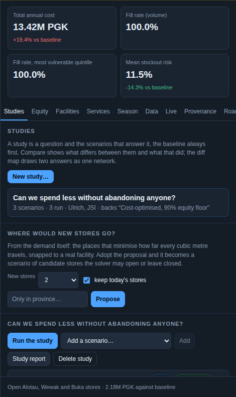
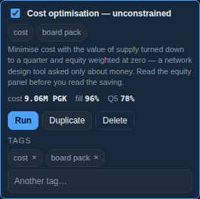
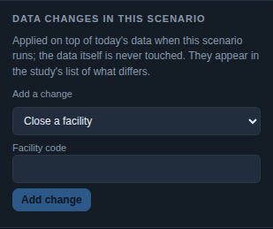
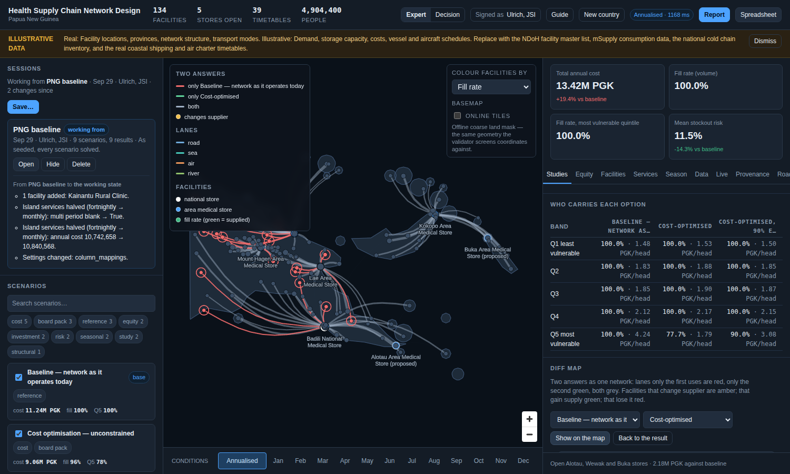
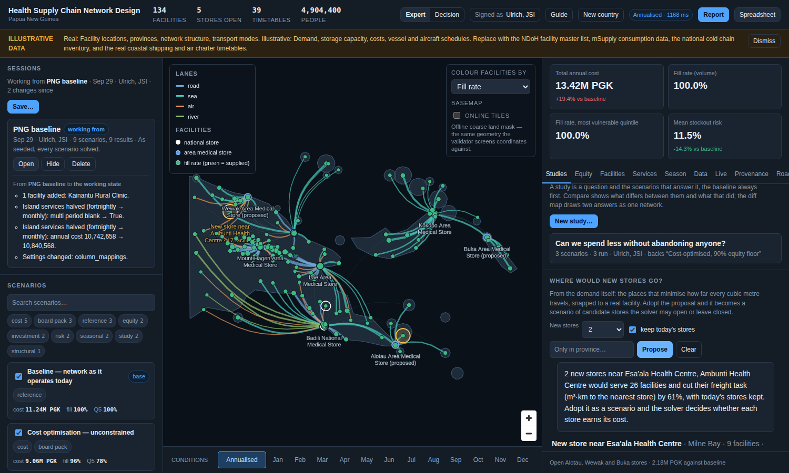
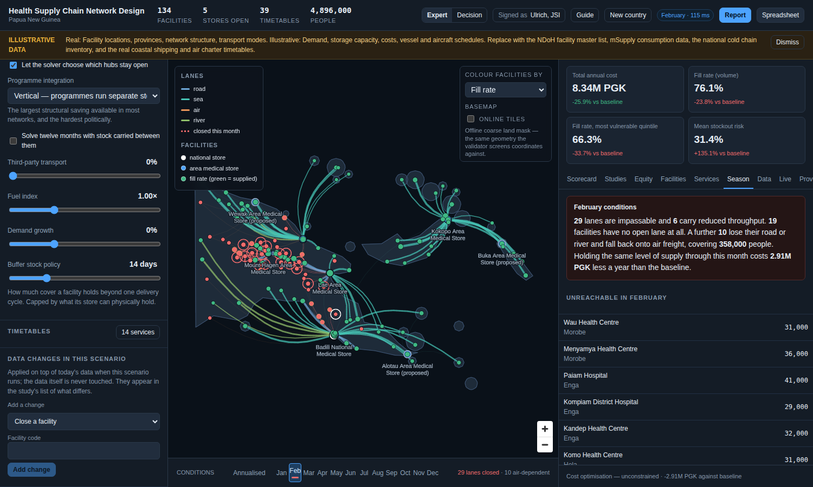
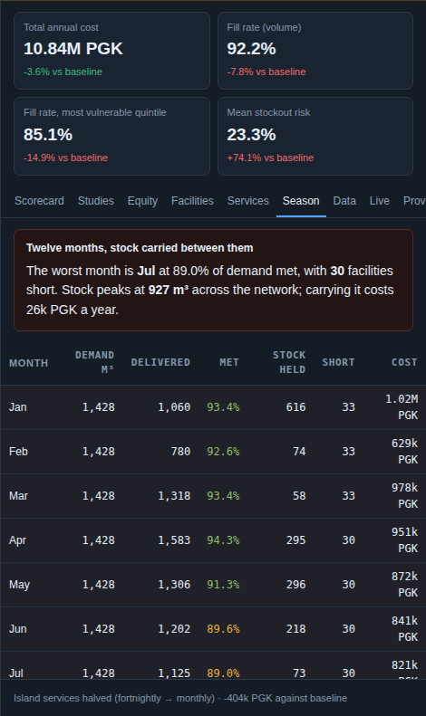

A study is a question and the ordered scenarios that answer it, the baseline always first. Presets make the classic studies in one click; the verdict, the lever diff and the diff map say what differs and what it did.

A study. Run it and read the verdict: which option is cheapest, which keeps the bottom band best supplied, and which the analyst backs.

Scenarios are questions. Levers, constraints and objective weights belong to the scenario; the data belongs to the country.

Data changes inside a scenario. Close a facility, scale demand in a province, open a store, add a lane. Applied in memory when it runs; the baseline is never touched.
Two answers as one network

The diff map. Lanes only the first option uses are red, only the second green, both grey; facilities that change supplier are amber. Built from the stored flows, no solver work.
Where would new stores go?

Greenfield. Demand-weighted centre of gravity, snapped to real facilities. Adopt it and it becomes a scenario of candidate stores the solver may open or leave closed; on the illustrative data it leaves them closed, and says so.
The wet season as it is lived

A month held all year. Click a month and the network re-solves at its conditions; the Season tab names what closed and who is cut off.

Twelve linked months. Stock carried between them within each facility's storage, a cyclic year, and the facilities that run short named with their peak stock.
Needs hosting
Ask the network coming
The question box: type "which facilities lose supply if the Alotau sailing goes monthly?" and get an answer drawn from the demo's results and the confidence budget, with the query shown. It needs a small server with an API key, so it ships once the site has one. Every question typed will also be read as a signal for what to build next.